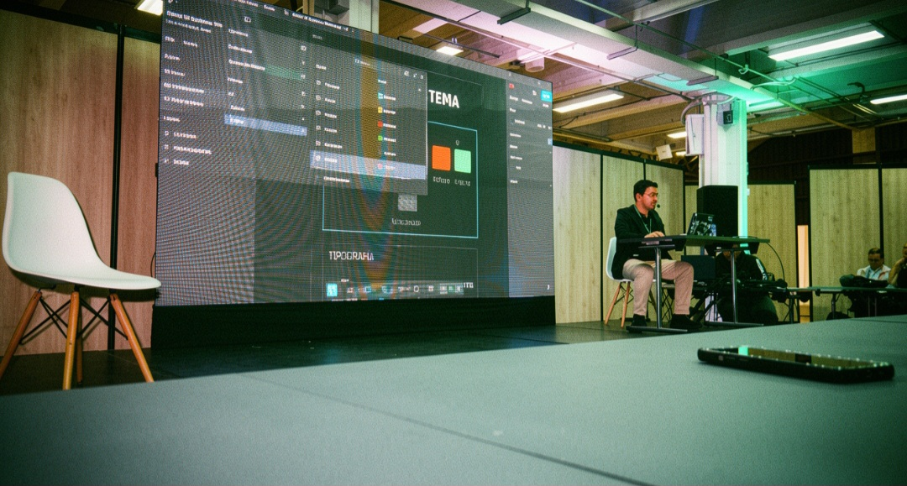
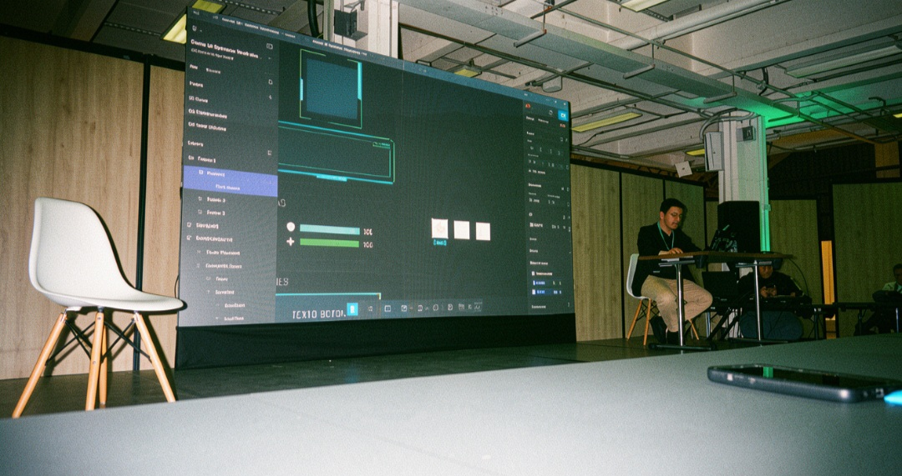
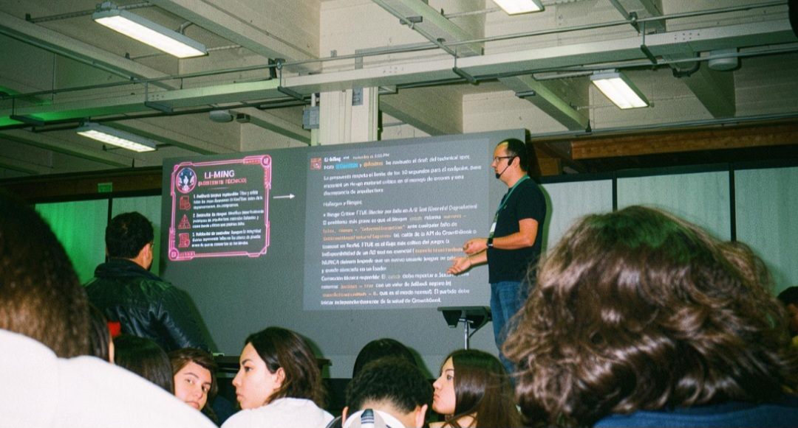
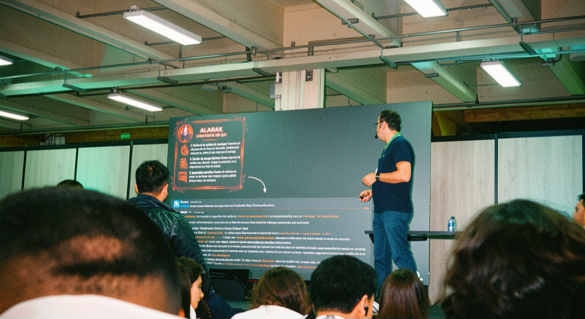
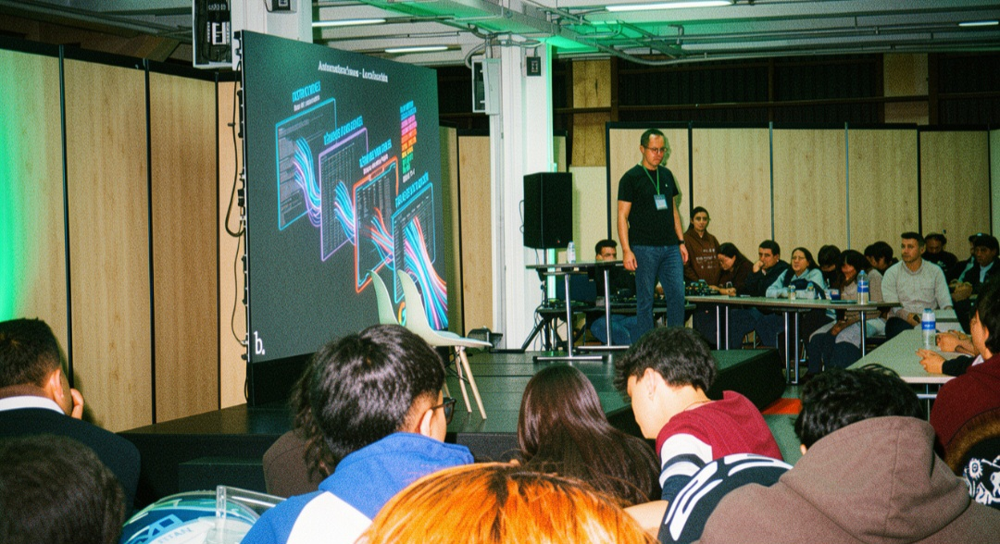

Game UI Systems: De Pantallas Bonitas a Interfaces que Funcionan
Andrés Felipe Pisso Tobar · Lead UX Designer · Teravision Games
Tema Principal
El diseño de interfaces de usuario (UI) in videojuegos va mucho más allá de la estética visual. Una buena interfaz de juego debe comunicar información crítica al jugador de manera clara, intuitiva y sin interrumpir el flujo de la experiencia de juego.
Resumen Reflexivo
Andrés Felipe Pisso Tobar nos llevó a través del proceso de creación de sistemas de UI para videojuegos desde la perspectiva de un diseñador UX profesional en la industria colombiana de videojuegos. La conferencia dejó claro que una interfaz "bonita" que confunde al jugador es un fracaso de diseño, mientras que una interfaz funcional y bien pensada es invisible: el jugador simplemente sabe qué hacer sin esfuerzo consciente.
Se exploraron conceptos como la jerarquía visual, el uso del color como comunicador semántico (vida en rojo, maná en azul, experiencia en verde), y cómo el diseño de UI debe adaptarse a diferentes géneros de juego. También se destacó el valor del playtesting constante: ningún diseñador puede predecir todos los puntos de confusión que encontrará un jugador real.
Un punto particularmente relevante fue la tensión entre la dirección de arte y la funcionalidad: a veces, el arte más impresionante visualmente es el que más daña la jugabilidad. El diseñador UX actúa como puente entre el equipo artístico y el equipo de gameplay, negociando soluciones que satisfagan ambas necesidades.
Palabras Clave


Main Topic
User interface (UI) design in video games goes far beyond visual aesthetics. A good gaming interface should communicate critical information to the player clearly, intuitively, and without interrupting the flow of the gaming experience.
Reflective Summary
Andrés Felipe Pisso Tobar took us through the process of creating UI systems for video games from the perspective of a professional UX designer in the Colombian video game industry. The conference made it clear that a "pretty" interface that confuses the player is a design failure, while a functional and well-thought-out interface is invisible: the player simply knows what to do without conscious effort.
Concepts such as visual hierarchy, the use of color as a semantic communicator (life in red, mana in blue, experience in green), and how UI design should be adapted to different game genres were explored. The value of constant playtesting was also highlighted: no designer can predict all the points of confusion that a real player will encounter.
A particularly relevant point was the tension between art direction and functionality: sometimes, the most visually stunning art is the one that damages the gameplay the most. The UX designer acts as a bridge between the art team and the gameplay team, negotiating solutions that meet both needs.
Keywords
Agentic AI
Luis Caro
Tema Principal
La Inteligencia Artificial Agéntica (Agentic AI) representa el siguiente paso evolutivo en el desarrollo de sistemas de IA: agentes capaces de planificar, tomar decisiones y ejecutar acciones de forma autónoma para alcanzar objetivos complejos, sin necesidad de intervención humana en cada paso.
Resumen Reflexivo
Luis Caro presented una visión panorámica y profunda de lo que significa que la IA pase de ser una herramienta reactiva (que responde a prompts) a ser un agente proactivo (que persigue metas). Esta distinción es fundamental: los sistemas agénticos pueden dividir una tarea grande en subtareas, usar herramientas externas (navegadores, APIs, bases de datos), evaluar los resultados de sus propias acciones y replantear su estrategia si algo falla.
Se expusieron ejemplos concretos de agentes de IA ya en uso en la industria: desde sistemas de atención al cliente que escalan casos complejos de forma autónoma, hasta agentes de código que pueden escribir, probar y depurar software sin supervisión constante. La ponencia también abordó los riesgos inherentes: un agente mal diseñado puede optimizar hacia metas equivocadas, consumir recursos excesivos o actuar de maneras inesperadas cuando se enfrenta a situaciones fuera de su distribución de entrenamiento.
La reflexión final fue poderosa: no estamos diseñando solo algoritmos, sino entidades con capacidad de acción en el mundo real. Esto exige estándares éticos, mecanismos de supervisión y marcos legales que aún estamos construyendo como sociedad.
Palabras Clave



Main Topic
Agentic AI represents the next evolutionary step in the development of AI systems: agents capable of planning, Make decisions and execute actions autonomously to achieve complex goals, without the need for human intervention at each step.
Reflective Summary
Luis Caro presented a panoramic and in-depth vision of what it means for AI to go from being a reactive tool (responding to prompts) to being a proactive agent (pursuing goals). This distinction is fundamental: agent systems can divide a large task into subtasks, use external tools (browsers, APIs, databases), evaluate the results of their own actions, and rethink their strategy if something fails.
Concrete examples of AI agents already in use in the industry were presented: from customer service systems that scale complex cases autonomously, to code agents that can write, test, and debug software without constant supervision. The presentation also addressed the inherent risks: a poorly designed agent can optimize towards the wrong goals, consuming excessive resources or acting in unexpected ways when faced with situations outside of your training distribution.
The final reflection was powerful: we are not designing mere algorithms, but entities with the capacity to act in the real world. This demands ethical standards, oversight mechanisms, and legal frameworks that we as a society are still in the process of building.